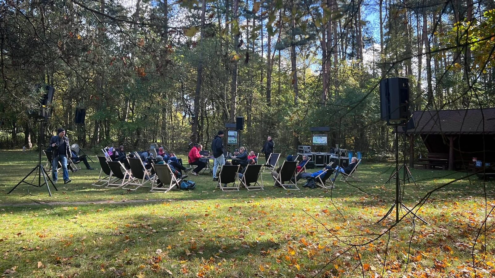
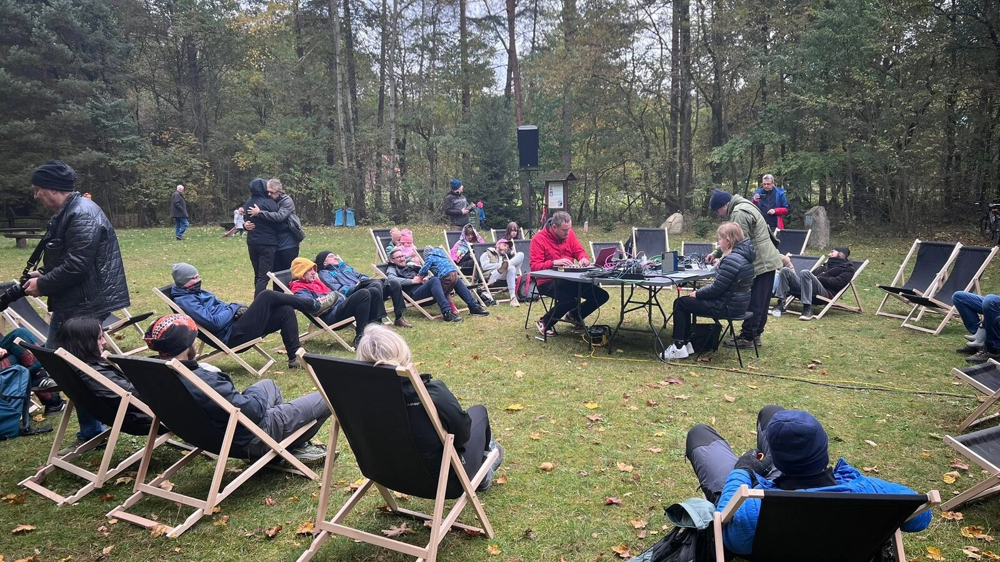
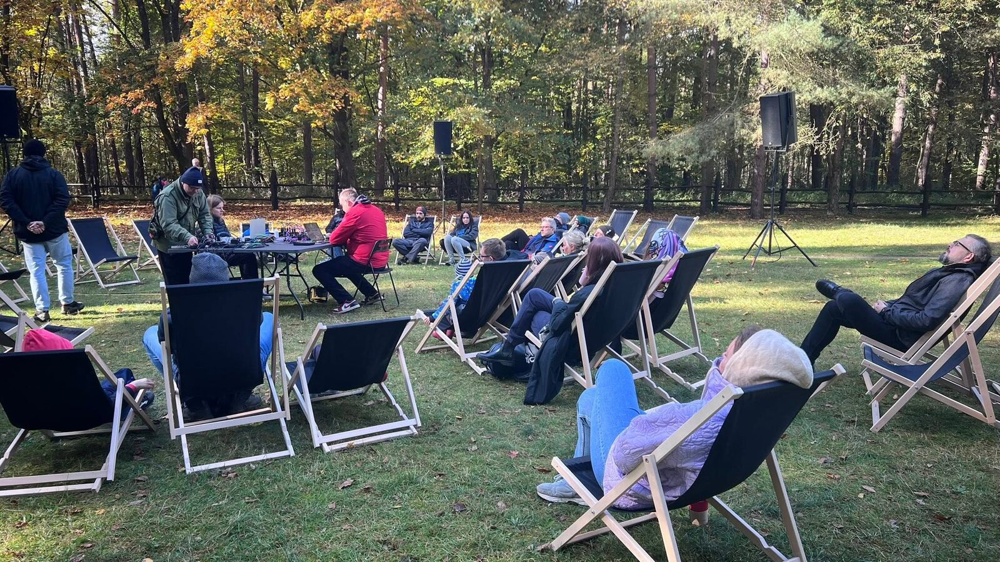
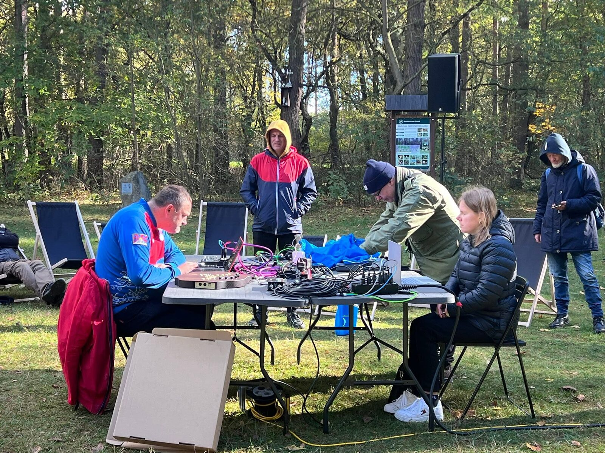
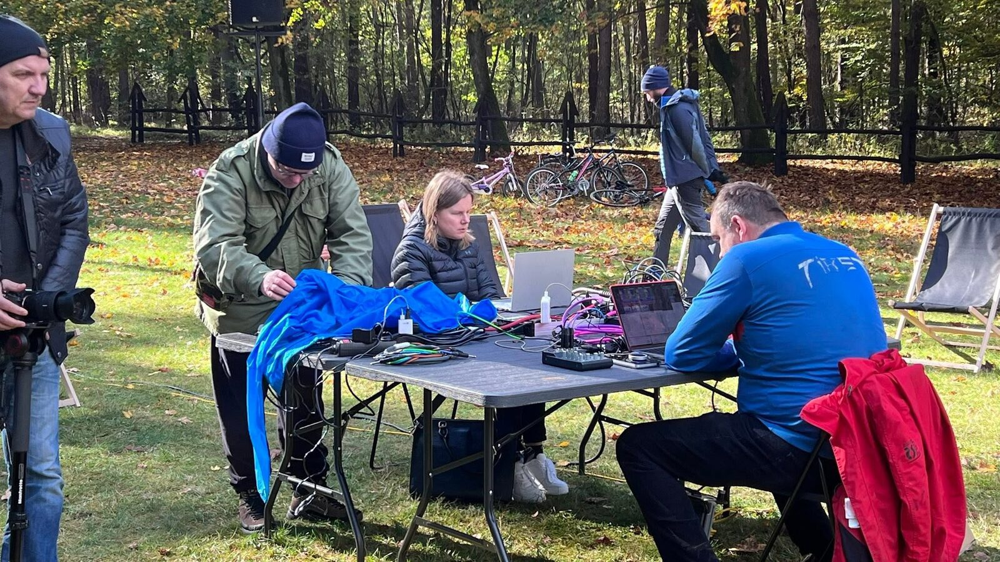
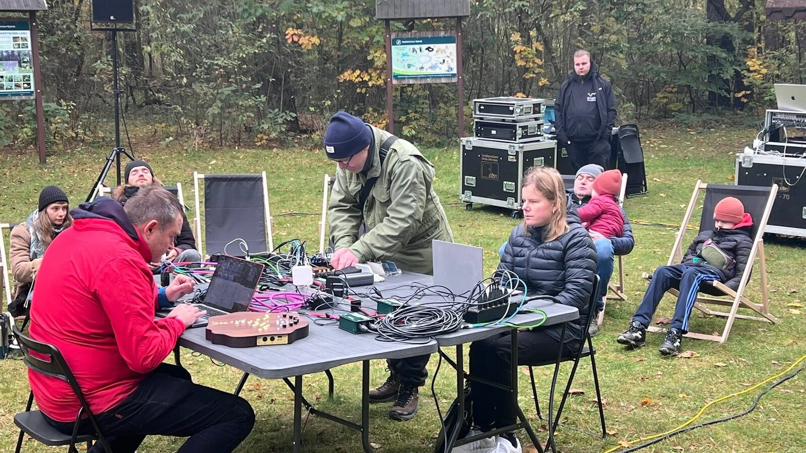
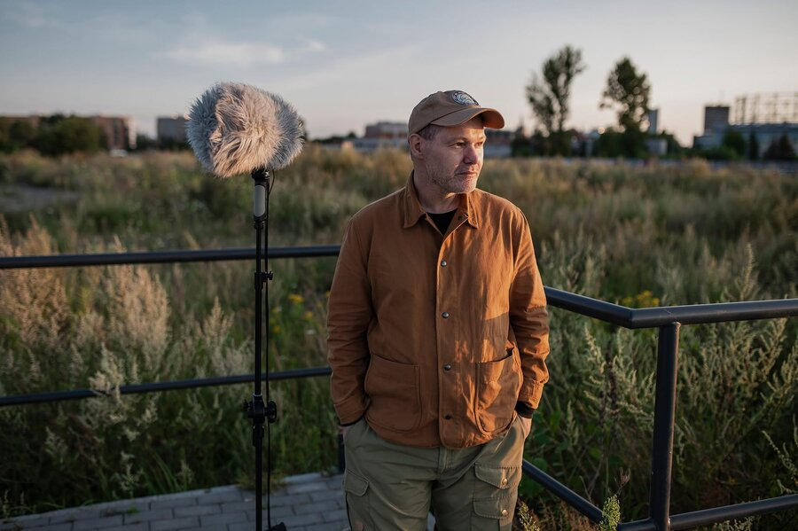
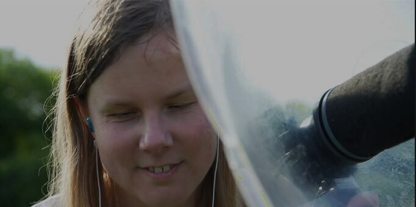
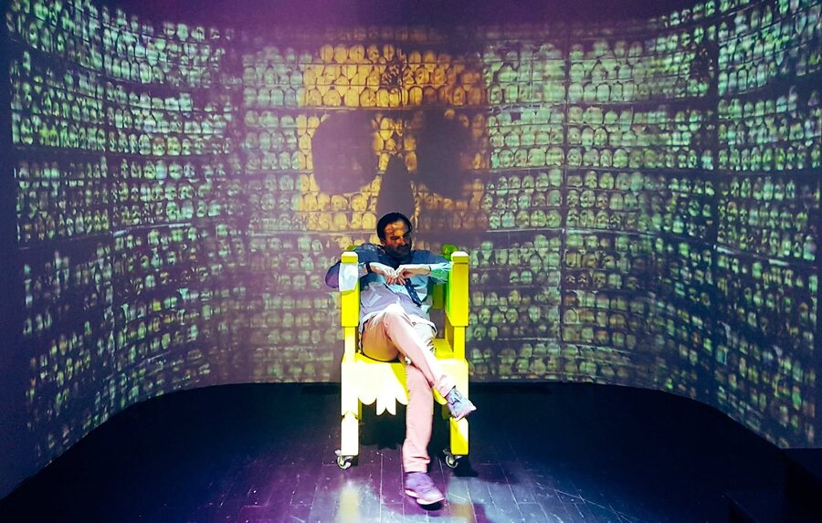

Las nie milczy. Trzeba tylko przestać go zagłuszać. „Cysterskie Kompozycje" to koncert, który nie odbywa się w sali — odbywa się w lesie i razem z lasem. Na polanie pod Przegędzą mikrofony wsłuchują się w to, co zwykle umyka: szelest ściółki, głosy ptaków, wiatr przeczesujący korony. Te dźwięki, zbierane na żywo, artyści delikatnie wzmacniają i puszczają w ruch — tak, że krążą wokół słuchaczy, rozpięte między głośnikami ustawionymi w kręgu.
Nie ma sceny ani podziału na wykonawców i widownię. Jest krąg ludzi pośród drzew, często z zamkniętymi oczami, i dźwięk przychodzący ze wszystkich stron — trochę z natury, trochę z technologii, a najbardziej z uważności. Wystarczy usiąść, zamknąć oczy i pozwolić, żeby las mówił.
O projekcie
Koncert w lesie i razem z lasem
„Cysterskie Kompozycje" to artystyczno-ekologiczne wydarzenie dźwiękowe zrealizowane w przestrzeni leśnej w Przegędzy, na Polanie Kanetowiec. Najprościej opisać je jako immersyjny koncert plenerowy — choć w istocie projekt wykracza poza ramy koncertu. Dźwięki przyrody rejestrowano na miejscu, w czasie rzeczywistym, a następnie przetwarzano na żywo i odtwarzano z systemu głośników rozmieszczonych wokół publiczności. Powstawał wielowarstwowy pejzaż akustyczny, w którym trudno oddzielić to, co „naturalne", od tego, co „skomponowane".

Głównym zamierzeniem projektu było rozwijanie świadomości ekologicznej i wrażliwości na środowisko dźwiękowe. Rzadko mamy okazję doświadczyć otoczenia wyłącznie uchem, w skupieniu, bez pośpiechu. Projekt proponuje praktykę uważnego słuchania jako sposób ponownego nawiązania relacji z naturą — nie przez apel, lecz przez bezpośrednie, zmysłowe doświadczenie. Technologia nie dominuje tu nad naturą, lecz pomaga ją usłyszeć wyraźniej: mikrofony terenowe, przestrzenne nagłośnienie i cyfrowe przetwarzanie dźwięku pełnią rolę soczewki.
Wydarzenie miało charakter otwarty i bezpłatny, a jego dopełnieniem są trwałe rezultaty cyfrowe: nagrania, booklet edukacyjny i dokumentacja. Projekt zrealizowała Fundacja Media 3.0 dzięki wsparciu z Krajowego Planu Odbudowy (KPO dla Kultury), we współpracy z Narodowym Instytutem Muzyki i Tańca.
Idea słuchania natury
W centrum projektu znajduje się czynność pozornie oczywista: słuchanie. Nie takie, które towarzyszy nam mimochodem, lecz słuchanie jako samodzielna, pełna praktyka — deep listening, głębokie słuchanie, w którym ucho przestaje filtrować świat pod kątem tego, co „ważne", i zaczyna przyjmować wszystko, co brzmi. Las okazuje się wtedy nie tłem, lecz współtwórcą: to on ustala rytmy ptaków i owadów, buduje przestrzeń bliskich mikrozdarzeń i dalekich planów wiatru.
Podczas wydarzenia te same sygnały, wychwytywane przez czułe mikrofony, wracały do uczestników subtelnie przetworzone — wzmocnione, zwielokrotnione, rozłożone w przestrzeni. Granica między tym, co słychać „naprawdę", a tym, co podane przez głośniki, celowo się rozmywała. I właśnie w tym rozmyciu rodziła się nowa uważność.
Trudno chronić coś, czego się nie zauważa. Kiedy las staje się głosem, zmienia się nasza wobec niego postawa.
Jak wyglądało wydarzenie
Sobota, 18 października 2025 roku, okolice południa. Na leśną Polanę Kanetowiec schodzą się uczestnicy. Nie ma bramek, biletów ani sceny — jest krąg kolumn głośnikowych pośród drzew, a wewnątrz niego miejsca dla słuchaczy. W centrum artyści przy stołach z mikserami i komputerami, otoczeni publicznością ze wszystkich stron. Po krótkim wprowadzeniu o ekologii dźwięku pada zachęta, by zamknąć oczy — polana cichnie w sposób, który w mieście się nie zdarza.


Wtedy zaczyna mówić las. Mikrofony terenowe zbierają na żywo jego brzmienia, a artyści w czasie rzeczywistym je przetwarzają: filtrują, warstwują, mieszają z dźwiękami modelu sztucznej inteligencji wytrenowanego na nagraniach z tego samego lasu. Dźwięk krąży między kolumnami, okrąża słuchaczy. Z zamkniętymi oczami trudno orzec, czy ptak siedzi na gałęzi, czy w głośniku. I o to chodzi. Po około godzinie kompozycja przechodzi w krąg rozmowy i miniwarsztat słuchania.
Miejsce wydarzenia
Polana Kanetowiec leży w lasach otaczających Przegędzę, w gminie Czerwionka-Leszczyny, na skraju powiatu rybnickiego. Polana otoczona drzewami działa jak naturalna sala koncertowa: ściana lasu miękko odbija i pochłania dźwięk, tworząc przestrzeń o łagodnym, ciepłym pogłosie. Jesienią słychać tu przeloty ptaków, pracę wiatru w koronach, opadanie liści. Dla projektu opartego na nagraniach terenowych taki pejzaż to nie dekoracja, lecz materiał — partytura, którą las pisze na bieżąco.
Jest w tym miejscu warstwa symboliczna, do której odsyła tytuł: to okolice historycznie związane z krajobrazem kształtowanym przez cystersów — zakon, który osiedlał się na uboczu, w ciszy, w bliskości natury. „Cysterskie Kompozycje" nawiązują do tej tradycji wyciszenia i kontemplacji.
Proces i technologia
Jak las zamienia się w kompozycję
Za pozorną prostotą wydarzenia stało precyzyjnie zaprojektowane zaplecze techniczne. Pierwszym ogniwem były mikrofony terenowe, dobrane tak, by uchwycić różne warstwy środowiska. Kierunkowe pozwalały „celować" w odległe źródła; kontaktowe, przykładane do pni, rejestrowały drgania materii niesłyszalne dla ucha; para binauralna zbierała przestrzenny obraz otoczenia, a mikrofony ambientowe — jego szeroki plan.

Tak zebrane sygnały stawały się materiałem żywej pracy kompozytorskiej — live sound designu. Artyści w czasie rzeczywistym wzmacniali detale, filtrowali pasma, nakładali warstwy, wydłużali frazy. Trzecim filarem był system przestrzennego nagłośnienia, przygotowany przez partnera technicznego — Fundację Soundscape. Kolumny w okręgu pozwalały płynnie przesuwać dźwięk między głośnikami, budując wrażenie ruchu i otaczającej obecności — rozwiązanie w tej skali i w terenie unikatowe w kraju.
Technologia nie była celem, lecz soczewką, przez którą las słychać uważniej niż gołym uchem.
Proces powstawania
Projekt od początku rozwijał się w terenie. Pierwszym etapem było rozpoznanie lokalizacji: trzeba było las po prostu usłyszeć — przejść dukty, sprawdzić, jak brzmi to miejsce o różnych porach dnia. Polana Kanetowiec wygrała swoją akustyką. Kolejne wizyty służyły dokumentacji i pierwszym nagraniom terenowym.


Równolegle trwały testy sprzętu w warunkach leśnych — czułość mikrofonów, zachowanie nagłośnienia w otwartej przestrzeni, zasilanie z agregatu ładowanego energią słoneczną, zabezpieczenia przed wilgocią. Zebrane nagrania posłużyły też do wytrenowania modelu AI. Ostateczny kształt wydarzenia wynikał w równym stopniu z planowania, co z reagowania — na pogodę, światło, aktywność ptaków. Ten procesualny charakter pracy nie był słabością, lecz metodą.
Technologie AI i resynteza dźwięku
Jednym z najbardziej eksperymentalnych wątków było użycie sztucznej inteligencji jako narzędzia pracy z dźwiękiem. Technika ta nosi nazwę neural synthesis: zamiast programować brzmienia ręcznie, pozwala się modelowi „osłuchać" z nagraniami, by zbudował własną reprezentację danego świata dźwiękowego i generował nowe dźwięki w jego charakterze. Wykorzystano podejście typu RAVE (Realtime Audio Variational autoEncoder), umożliwiające resyntezę w czasie rzeczywistym — na tyle szybko, by grać nim na żywo, jak instrumentem.
Powstawały brzmienia niewystępujące w naturze, a jednak z niej zrodzone — zawieszone pomiędzy dokumentem a wyobraźnią. Sztuczna inteligencja nie zastępowała artystów; działała jak jeszcze jeden, osobliwy instrument, nad którym decyzje — co, kiedy i jak zabrzmi — pozostawały po stronie człowieka.
Artyści
Troje słuchających
Trójka artystów o różnych, dopełniających się praktykach — od dokumentacji przyrody, przez sztukę dźwięku, po eksperymenty z nowymi technologiami. Podczas koncertu pracowali w centrum kręgu, wspólnie prowadząc żywą kompozycję z dźwięków lasu.

Emiter — Marcin Dymiter
Field recording · kompozycja
Artysta dźwiękowy i kompozytor działający w obszarze elektroniki eksperymentalnej, field recordingu i muzyki improwizowanej. Autor cyklu Field Notes oraz książek „Notatki z terenu" i „Maszyny do ciszy". W projekcie odpowiadał za pracę z nagraniami terenowymi i dramaturgię dźwiękową wydarzenia.

Izabela Dłużyk
Dokumentacja dźwięku · nagrania przyrody
Dokumentalistka dźwięku i rejestratorka przyrody, specjalizująca się w nagraniach terenowych ptaków i naturalnych krajobrazów akustycznych. Od kilkunastu lat buduje archiwum nagrań przyrody Polski i Europy. W „Cysterskich Kompozycjach" wniosła doświadczenie nasłuchiwania natury i mistrzowski warsztat rejestracji terenowej.

złe oko — Łukasz Żyła
Elektronika · systemy generatywne · AI
Improwizator, artysta audiowizualny i badacz nowych technologii dźwięku. Twórca festiwali sztuki eksperymentalnej, m.in. Insomnia Art Festival. W projekcie odpowiadał za warstwę elektroniczną i generatywną koncertu — w tym pracę z modelem AI — oraz współorganizację przedsięwzięcia.
Materiały
Wydarzenie minęło — słuchanie może trwać
Koncert trwał około godziny, ale projekt nie skończył się wraz z ostatnim dźwiękiem. Jego trwałym rezultatem jest zbiór materiałów cyfrowych — dostępnych otwarcie i bezpłatnie: nagrania audio, materiały wideo, dokumentacja fotograficzna oraz booklet edukacyjny. Pełnią one podwójną rolę: są dokumentacją jednorazowego wydarzenia i zarazem samodzielnymi utworami oraz narzędziami edukacyjnymi.
Audio
Najważniejszym materiałem jest zapis wydarzenia w dwóch wariantach. Miks stereo to wersja uniwersalna, do odsłuchu na dowolnym sprzęcie. Wersja binauralna odtwarza przestrzenny wymiar koncertu: w słuchawkach dźwięki lokalizują się wokół słuchacza — z przodu, z tyłu, z boków — tak jak na polanie. Obok rejestracji udostępniamy wybrane nagrania terenowe: czyste brzmienia miejsca, które były materiałem kompozycji i danymi treningowymi modelu AI.
🎧 Słuchaj na słuchawkach — dopiero wtedy słychać ruch dźwięku między kolumnami i głębię planów. Chcesz posłuchać już teraz? Mapa dźwiękowa pozwala wejść w pięć leśnych punktów nasłuchu i odtworzyć terenowe nagrania przyrody.
Booklet
Cyfrowa publikacja towarzysząca — bezpłatna, w formacie PDF i w wersji online. Zbiera komentarze artystów, tekst kuratorski oraz przystępnie napisaną część techniczną: rodzaje mikrofonów, techniki field recordingu, zasady live sound designu i pracy z przestrzennym nagłośnieniem oraz proces trenowania modelu AI. Zamieszczone kody QR prowadzą wprost do nagrań i materiałów wideo.
Wszystkie zasoby przygotowano z dbałością o dostępność, zgodnie ze standardem WCAG 2.1 (m.in. transkrypcje i opisy alternatywne).
Dokumentacja
Zdjęcia z polany
Sobota, 18 października 2025 — Polana Kanetowiec pod Przegędzą. Krąg słuchaczy, stanowiska artystów i jesienny las jako współtwórca koncertu. Kliknij zdjęcie, aby powiększyć.
Ekologia projektu
Zrobione z uważności, o której mówi
Projekt o słuchaniu natury nie może natury zagłuszać ani niszczyć — ta zasada wyznaczyła sposób realizacji na każdym poziomie. Ekologia nie była tu tematem opowieści, lecz praktyką organizacyjną: wydarzenie pomyślano jako formę niskoemisyjnej produkcji kultury. Zrezygnowano z klasycznej sceny i rozbudowanej infrastruktury — na polanie stanęły jedynie kolumny, stanowiska artystów i miejsca dla słuchaczy, rozstawione bez ingerencji w podłoże i w całości usunięte po wydarzeniu.
Szczególną uwagę poświęcono zasilaniu. Sprzęt pracował z cichego agregatu, naładowanego wcześniej energią z mobilnych paneli fotowoltaicznych — bez ciągnięcia okablowania i bez emisji spalin w trakcie wydarzenia. Niski poziom hałasu urządzenia (poniżej 50 dB) miał znaczenie podwójne: środowiskowe i artystyczne — w projekcie opartym na subtelnych brzmieniach natury głośne zasilanie unieważniłoby samą jego ideę.
Ślad środowiskowy ograniczono też inaczej: materiały opublikowano cyfrowo, bez masowych druków; sprzęt zabezpieczano rozwiązaniami wielokrotnego użytku; skalę wydarzenia dopasowano do chłonności miejsca. Treść i forma projektu pozostały spójne — „Cysterskie Kompozycje" mówiły o uważności wobec środowiska i były z tej uważności zrobione.
Las po koncercie wyglądał dokładnie tak jak przed nim.